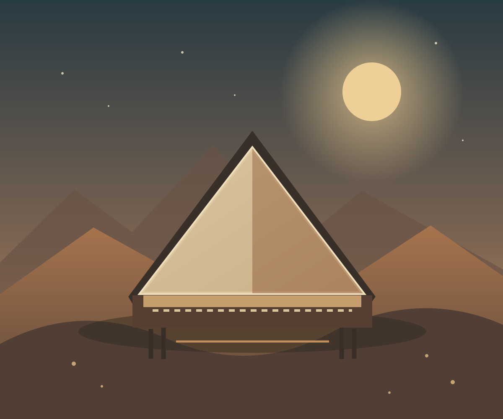

Uma história bíblica
Tabernáculo
& Menorá.
Um santuário no deserto.
Uma luz que guiava o povo.
Uma viagem em três partes01—03

Um lugar de encontro. Uma luz que permanece.
Uma história bíblica
Um santuário no deserto.
Uma luz que guiava o povo.

Um lugar de encontro. Uma luz que permanece.